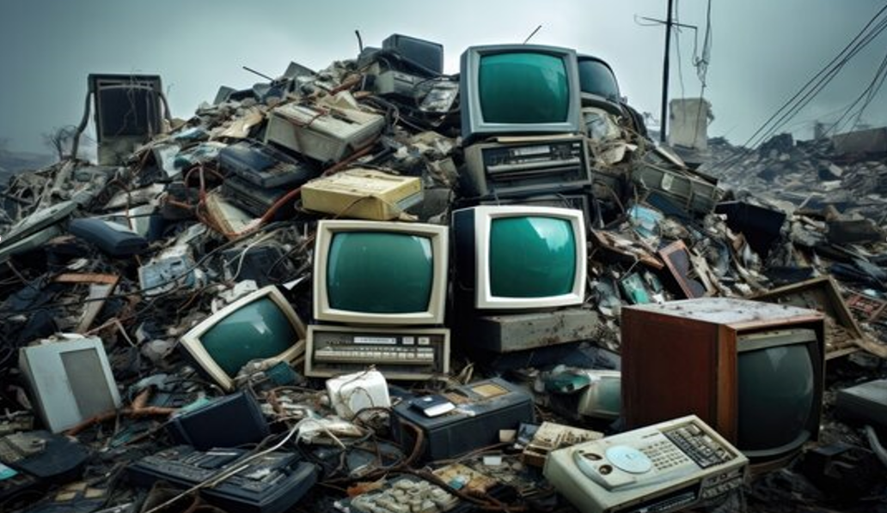

Descarte o velho sem descartar o amanhã.
A inovação não precisa vir acompanhada do impacto ambiental. O verdadeiro progresso acontece quando fechamos o ciclo de consumo com responsabilidade: destinando o lixo eletrônico para postos de coleta e logística reversa, garantindo que plásticos e metais nobres sejam reaproveitados e que os resíduos perigosos tenham um fim seguro.
3%
Reciclado de forma correta
57 toneladas
Produzidas em 2019
11,4 Kg
Produzidos por habitante
5º
Maior produtor do mundo